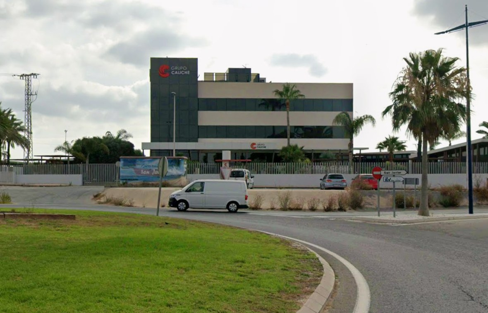
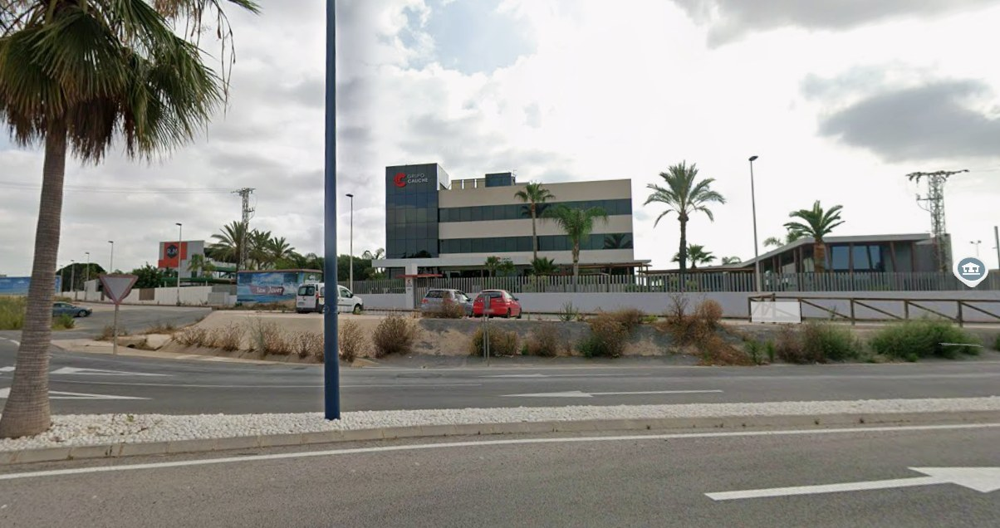
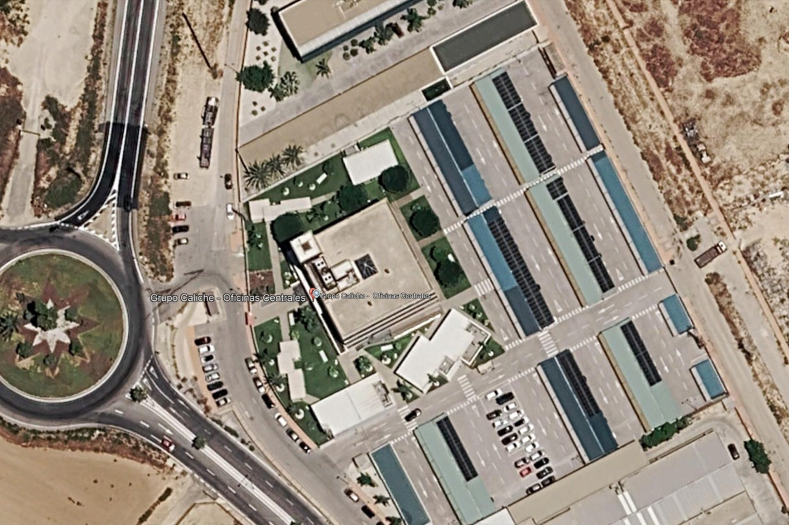
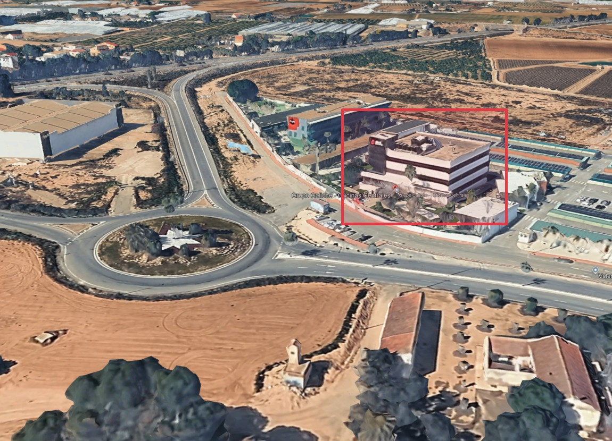
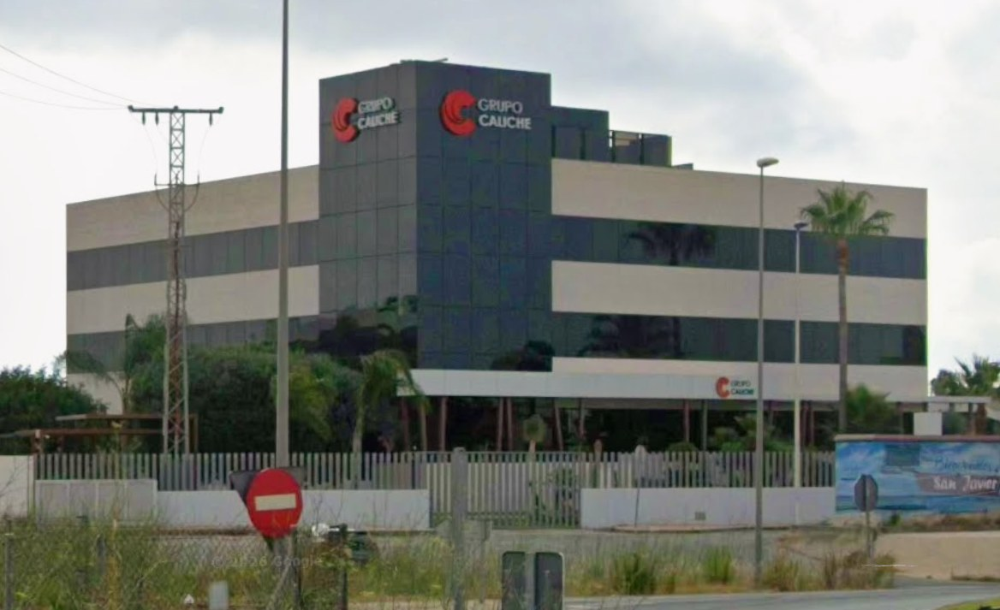

El lazo navideño de la sede, proyectado sobre la fachada
Una alternativa al lazo físico sin grúas, sin andamios ni riesgo en altura: dos proyectores dibujan el lazo —igual o muy
similar al actual— abrazando la esquina de la torre donde hoy van los dos logotipos. Con el mismo equipo, la fachada puede
vestirse de corporativo, de efeméride o de cualquier evento del año.
Lazo actual: 6 + 6 m × 8 m de altoReplantado sobre su ortofoto realReutilizable los 365 días
Lazo físico · montaje de temporada (referencia del cliente)1/4
01
Simulador del entorno real
Volumen replantado con las medidas de la ortofoto: torre de cristal en el extremo noroeste del volumen (44 × 30 m),
fachada principal orientada al suroeste, porche de columnas, jardín de entrada con palmeras, carretera con rotonda
(la de la estrella) y las naves fotovoltaicas al este. Mueva la hora del día: el contraste del lazo proyectado se calcula
sobre la reflectancia real del cristal oscuro. Las perspectivas coinciden con sus fotografías; gire con el ratón.
Necesita conexión la primera vez para cargar el motor 3D. El resto del documento funciona sin él.
00 · rotonda de la estrella: esquina de la torre y porche

01 · calzada sur: la fachada principal, con el jardín delante

02 · sector este: la torre al fondo; el muro recibe el sol de tarde

03 · ortofoto: volumen 44 × 30 m, rotonda y naves al este

04 · vista 3D: orientación suroeste de la fachada del lazo
02
¿Se verá de día? La respuesta honesta
Es su pregunta principal y la respondemos aquí: ninguna proyección comercial es visible con sol directo sobre
una fachada de cristal oscuro. Con nublado de tarde se intuye; desde el crepúsculo civil (≈18:10) es plenamente legible.
Y de día, el lazo físico actual tampoco «funciona» apagado: ambos lucen en la franja de tarde-noche — que es además cuando la
rotonda y la sede reciben todas las miradas. Un matiz a su favor: la fachada mira al suroeste, con el ocaso a sus espaldas;
al anochecer el muro es el primero de la zona en quedarse en sombra y el lazo proyectado «enciende» la puesta de sol.
Contraste percibido del lazo proyectado · 2×20.000 lm · tiro 26 m · diciembre
La proyección además hace cosas que el LED fijo no: respirar, animar el brillo
tipo paillette, intensificarse en las horas de más tráfico de la rotonda y apagarse sola de madrugada. Sensor crepuscular +
horario 18:00–00:30, control desde el móvil.

De día · estado habitualAnochecer · lazo físico
Arrastre la manecilla: de día el protagonismo de la fachada lo llevan
los logotipos y el porche, con o sin lazo.
Sol de mediodía
< 5 %
contraste sobre cristal oscuro · no apreciable con ningún equipo del mercado
Nublado de tarde
10–18 %
se intuye la forma; no es el escenario de venta
Crepúsculo civil
40 %+
visible y legible desde la rotonda · 18:10–18:50
Noche
×30
escena objetivo: rojo pleno con brillo de partículas, como su foto aérea
03
Lazo físico vs proyección
Ambos dan la imagen nocturna que la sede ya ofrece cada Navidad. La diferencia está en el resto del año, la seguridad y la flexibilidad.
Criterio
Lazo físico (LED) — estado actual
Proyección sobre fachada (propuesta)
Montaje
Grúa/plataforma cada temporada; trabajos en altura sobre el porche y accesos
Sin intervenir en fachada: pies de proyección en la calzada/jardín con permiso
Coste recurrente
Medios auxiliares + montaje/desmontaje + almacenaje del lazo
Alquiler de temporada o amortización si se compra; sin grúa
Imagen nocturna
La referencia que nos ha enviado: brillo de LED muy logrado
La misma silueta 6+6×8 m, con partículas de brillo animables
Tramos de LED fundidos cada temporada; gestión de piezas almacenadas
Equipo monitorizado; sustitución por contrato en 24–48 h
Fachada
Anclajes y pasacables sobre el cerramiento: revisiones e impermeabilización
Cero impactos sobre el edificio
Seguridad
Estructura colgada sobre accesos en época de máximo tránsito
Equipo en superficie, lastres y balizamiento
Electricidad
Toma en cubierta, temporizador
Cuadro dedicado ≈ 4–6 kW; se resuelve desde el porche con latiguillo homologado
04
Planteamiento sobre el entorno
Medidas escaladas de la ortofoto: fachada suroeste de 44 m; la esquina de la torre queda a 12–24 m de la
calzada, que es exactamente el tiro limpio que necesitamos. Los dos tiros propuestos (P1 al sur sobre el paño de la cara
carretera, P2 desde la glorieta sobre la cara jardín) despejan palmeras, porche, coches y farolas. Dos opciones de pie:
A) calzada/glorieta (permiso municipal de ocupación) o B) jardín propio con mástil de 3–4 m (sin permiso, más ángulo).
Se resuelve en la visita.
≈ 3 €/noche (12 h, tarifa 3T) · frente a grúa + montaje anual
Ventana de uso
18:00–00:30
sensor crepuscular + horario · control desde el móvil
05
El mismo equipo, todo el año
Usted mismo lo insinúa en el correo («no se descarta para otros eventos»): con los pies de proyección fijos,
cambiar de «vestido» es tan rápido como cambiar una playlist.
Diciembre
Lazo y Navidad
El lazo actual replicado, con brillo de partículas tipo paillette y opción de felicitación en el friso del porche.
Todo el año
Corporativo
Logotipo animado suave, lazos solidarios (18F, Día contra el Cáncer), visitas de clientes y ferias.
Eventos
Celebraciones
Aniversarios, campanadas, lanzamientos de producto con su archivo gráfico de marca.
Discreto
Cielo que respira
Movimiento lentísimo sobre el paño, consumo mínimo y sin deslumbramiento hacia la carretera.
06
Fases y qué proponemos cerrar ahora
Visita técnica y medición
Cotas exactas del paño de la torre, validación de los dos tiros con palmeras y porche,
opción A (calzada/glorieta, con permiso municipal) o B (jardín propio con mástil), punto de luz. Una mañana.
Simulación luminotécnica y render final
Calibración de este simulador con su foto nocturna real; entregamos el «antes/después» con sus medidas. Semana 1.
Alquiler o compra del equipo
Cotamos los dos escenarios: alquiler de temporada (instatable en 2 semanas) o instalación fija reutilizable todo el año (5–7 semanas).
Montaje, alineado y corrección de geometría
Medio día de tarde, sin afección a la operativa de la sede. Persiana y blend afinados sobre el propio edificio.
Estreno y temporada
Sincronizado con el encendido navideño de la zona; monitorización remota con aviso de fallo y sustitución en 24–48 h.
Presupuesto: lo cerramos tras la visita, con distancias reales y escenario elegido (alquiler vs compra).
Como referencia de mercado: el ciclo anual del lazo físico (grúa, montaje/desmontaje, almacenaje, seguro y sustitución de LED)
se mueve en órdenes similares o superiores a un alquiler de temporada de proyección; la compra se amortiza al reutilizarse todo
el año. Lo cuantificaremos en la propuesta económica.